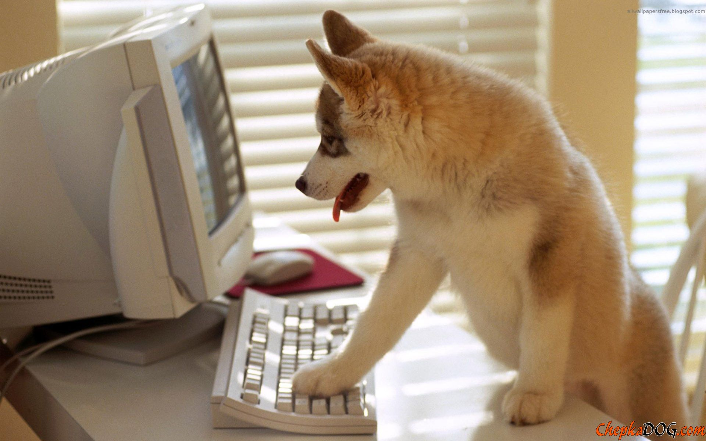

Intro to the Command Line and Python Tooling

Nerdcred++
Knowing the CLI will make you 107% sexier
whoami?
Why are we doing this?
- Faster and more flexible than finder
- Better understanding of your computer and software development
- Some programs only have CLI interface
- Often expected for jobs
CLI == Command Line == Terminal == Shell

To the command line!
In a new directory:
- Create a new file
- Add some content to it
- verify that you have done so
- rename the file
- copy the file with a new name
- edit the contents of the copy
Cheat Sheet
pwd : print working directory
ls <folder | filter> : list directory contents
cd <directory> : change directory
mkdir <directory> : create new directory
rm <file> : delete file
rmdir <directory> : delete directory
touch <file> : create empty file
cat <file> : output file contents
head <file> : get first lines in file
tail <file> : get last lines in file
grep <pattern> <file> : find pattern in file
find <start dir> <options> : locate files in system
ls <folder | filter> : list directory contents
cd <directory> : change directory
mkdir <directory> : create new directory
rm <file> : delete file
rmdir <directory> : delete directory
touch <file> : create empty file
cat <file> : output file contents
head <file> : get first lines in file
tail <file> : get last lines in file
grep <pattern> <file> : find pattern in file
find <start dir> <options> : locate files in system

python : command not found ?
Update your PATH
Code to customize your terminal lives in the file .bash_profile in your home folder. If it does not exist you can create it. This is a plain text file that you can add to using any text editor.
Any commands that you can run interactively at the terminal command prompt can be put in here, to be executed each time the terminal is opened.
Directories, not specific files should be added to the path. When a command is entered on the command line, bash will search all of the directories on the path for that command (program).
To add to your path use:
PATH="$PATH:/path/to/new/folder"
E.g. for python 3.5, using Git-Bash on windows add:
PATH="$PATH:/c/Python35:/c/Python35/Scripts"